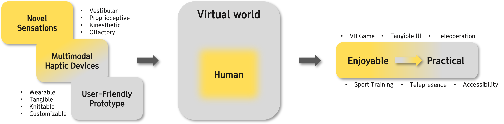

Research Goals
"Bringing Fun to Those Who Seek It and Hope to Those in Need"
- Crafting Intuitive Systems for Unique Sensory Experiences.
- Merging Virtual Reality and Human Sensation with Cutting-Edge Haptic Innovations.
- Creating Value through the Fusion of Virtual Environments and Human Interaction: From Enjoyment to Practical Applications.

Conference & Publication

Proposal of a Framework for Enhancing Teleoperation Experience with Biomechanical Simulation-Based Electrical Muscle Stimulation in Virtual Reality
Hwang, S., Kang, S., Oh, J., Park, J., Shin, S., Yiyue Luo, Joseph DelPreto, Wojciech Matusik, Daniela Rus, and Kim, S.
UbiComp/ISWC '24 Adjunct - (Accepted)
Hwang, S., Kang, S., Oh, J., Park, J., Shin, S., Yiyue Luo, Joseph DelPreto, Wojciech Matusik, Daniela Rus, and Kim, S.
UbiComp/ISWC '24 Adjunct - (Accepted)

Adaptive In-Vehicle Virtual Reality for Reducing Motion Sickness: Manipulating Passenger Posture During Driving Events
Elsharkawy, A., Ataya, A., Yeo, D., Seong, M., Hwang, S., Joseph DelPreto, Wojciech Matusik, Daniela Rus, and Kim, S.
UbiComp/ISWC '24 Adjunct - (Accepted)
Elsharkawy, A., Ataya, A., Yeo, D., Seong, M., Hwang, S., Joseph DelPreto, Wojciech Matusik, Daniela Rus, and Kim, S.
UbiComp/ISWC '24 Adjunct - (Accepted)

TimelyTale: A Multimodal Dataset Assessing Passenger's Demands for Explanations in Highly Automated Vehicles
Kim, G., Hwang, S., Seong, M., Yeo, D., Daniela Rus, and Kim, S.
Proceedings of the ACM on IMWUT - (Accepted)
Kim, G., Hwang, S., Seong, M., Yeo, D., Daniela Rus, and Kim, S.
Proceedings of the ACM on IMWUT - (Accepted)

Intelligence Walker: A Seamless Mobility Assist Device for the Elderly
Choi, Y., Yeo, D., Hwang, S., Seong, M., Moon, J., Yiyue Luo, Wojciech Matusik, Daniela Rus, and Kim, K.
2024 IEEE ICRA Workshop on Wearable - Link
Choi, Y., Yeo, D., Hwang, S., Seong, M., Moon, J., Yiyue Luo, Wojciech Matusik, Daniela Rus, and Kim, K.
2024 IEEE ICRA Workshop on Wearable - Link

Dual-sided Peltier Elements for Rapid Thermal Feedback in Wearables
Kang, S., Kim, G., Hwang, S., Park, J., Elsharkawy, A., and Kim, S.
2024 IEEE ICRA Workshop on Wearable - Link
Kang, S., Kim, G., Hwang, S., Park, J., Elsharkawy, A., and Kim, S.
2024 IEEE ICRA Workshop on Wearable - Link

WatchCap: Improving Scanning Efficiency in People with Low Vision through
Compensatory Head Movement Stimulation
Jo, T., Yeo, D., Kim, G., Hwang, S., and Kim, S.
Proceedings of the ACM on IMWUT - Link
Jo, T., Yeo, D., Kim, G., Hwang, S., and Kim, S.
Proceedings of the ACM on IMWUT - Link

ErgoPulse: Electrifying Your Lower Body With Biomechanical Simulation-based
Electrical Muscle Stimulation Haptic System in Virtual Reality
üèÜ Honorable mention
Hwang, S., Oh, J., Kang, S., Seong, M., Elsharkawy, A., and Kim, S.
Proceedings of the 2024 CHI - Link
üèÜ Honorable mention
Hwang, S., Oh, J., Kang, S., Seong, M., Elsharkawy, A., and Kim, S.
Proceedings of the 2024 CHI - Link

SYNC-VR: Synchronizing Your Senses to Conquer Motion Sickness for Enriching
In-Vehicle Virtual Reality
üèÜ Honorable mention
Elsharkawy, A., Ataya, A., Yeo, D., An, E., Hwang, S., and Kim, S.
Proceedings of the 2024 CHI - Link
üèÜ Honorable mention
Elsharkawy, A., Ataya, A., Yeo, D., An, E., Hwang, S., and Kim, S.
Proceedings of the 2024 CHI - Link

GaitWay: Gait Data-Based VR Locomotion Prediction System Robust to Visual
Distraction
Kim, Y., Hwang, S., Oh, J., and Kim, S.
Extended Abstracts of the 2024 CHI (Late-Breaking Work) - Link
Kim, Y., Hwang, S., Oh, J., and Kim, S.
Extended Abstracts of the 2024 CHI (Late-Breaking Work) - Link

Curving the Virtual Route: Applying Redirected Steering Gains for Active
Locomotion in In-Car VR
Gim, B., Kang, S., Kim, G, Yeo, D., Hwang, S., and Kim, S.
Extended Abstracts of the 2024 CHI (Late-Breaking Work) - Link
Gim, B., Kang, S., Kim, G, Yeo, D., Hwang, S., and Kim, S.
Extended Abstracts of the 2024 CHI (Late-Breaking Work) - Link

Evaluation of Visual, Auditory, and Olfactory Stimulus-Based Attractors for
Intermittent
Reorientation in Virtual Reality Locomotion
Lee, J., Hwang, S., Ataya, A., and Kim, S.
Virtual Reality - Link
Lee, J., Hwang, S., Ataya, A., and Kim, S.
Virtual Reality - Link

Effect of Optical Flow and User VR Familiarity on Curvature Gain Thresholds for
Redirected Walking
Lee, J., Hwang, S., Ataya, A., and Kim, S.
Virtual Reality - Link
Lee, J., Hwang, S., Ataya, A., and Kim, S.
Virtual Reality - Link

Enhancing Seamless Walking in Virtual Reality: Application of Bone-Conduction
Vibration in Redirected Walking
üèÜ Honorable mention
Hwang, S., Kim, Y., Seo, Y., and Kim, S.
2023 IEEE International Symposium on Mixed and Augmented Reality (ISMAR) - Link
üèÜ Honorable mention
Hwang, S., Kim, Y., Seo, Y., and Kim, S.
2023 IEEE International Symposium on Mixed and Augmented Reality (ISMAR) - Link

Designing Virtual Agent Human-Machine Interfaces Depending on the Communication
and Anthropomorphism Levels in Augmented Reality
üèÜ Honorable mention
Kang, Y., Choi, S., An, E., Hwang, S., and Kim, S.
AutomotiveUI 2023 - Link
üèÜ Honorable mention
Kang, Y., Choi, S., An, E., Hwang, S., and Kim, S.
AutomotiveUI 2023 - Link

Electrical, Vibrational, and Cooling Stimuli-Based Redirected Walking: Comparison
of Various Vestibular Stimulation-Based Redirected Walking Systems
Hwang, S., Lee, J., Kim, Y., Seo, Y., and Kim, S.
Proceedings of the 2023 CHI - Link
Hwang, S., Lee, J., Kim, Y., Seo, Y., and Kim, S.
Proceedings of the 2023 CHI - Link

REVES: Redirection Enhancement Using Four-Pole Vestibular Electrode
Stimulation
Hwang, S., Lee, J., Kim, Y., and Kim, S.
Extended Abstracts of the 2022 CHI (Late-Breaking Work) - Link
Hwang, S., Lee, J., Kim, Y., and Kim, S.
Extended Abstracts of the 2022 CHI (Late-Breaking Work) - Link

Auditory and Olfactory Stimuli-Based Attractors to Induce Reorientation in Virtual
Reality Forward Redirected Walking
Lee, J., Hwang, S., Kim, K., and Kim, S.
Extended Abstracts of the 2022 CHI (Late-Breaking Work) - Link
Lee, J., Hwang, S., Kim, K., and Kim, S.
Extended Abstracts of the 2022 CHI (Late-Breaking Work) - Link